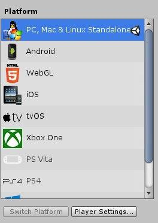
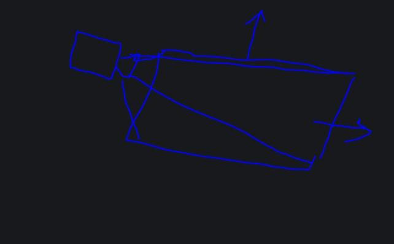
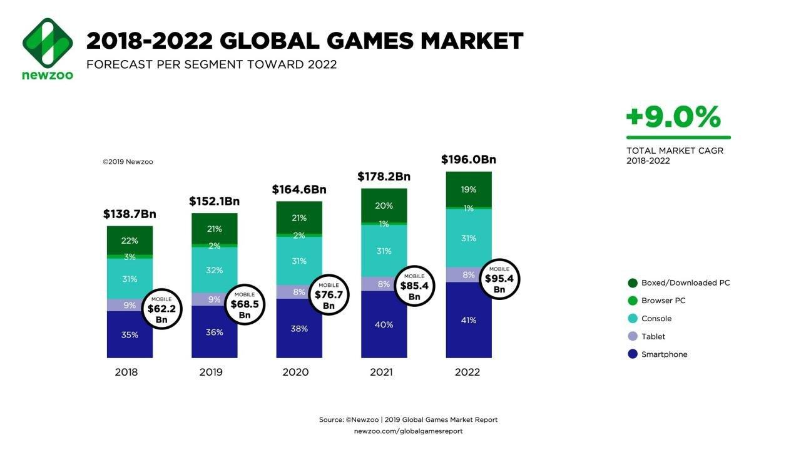

Unity 遊戲引擎優勢
原討論串開頭：https://t.me/GooayeUSA/153617
Tian, [22.09.20 09:44]
想請教各位對UNITY 的看法
我看各大遊戲商基本上都有自己的遊戲引擎，而且遠強於UNITY
UNITY 比較像是低門檻的選擇，且目前來看多數偏向小品遊戲 要做到大作規模也是有點難度看到ARKW 有買，好奇想問一下大家的看法
Miula, [22.09.20 09:47]
並沒有，基本上unity幾乎是大多數廠商都願意選用的引擎選擇
Lza _TW, [22.09.20 09:48]
行動平台上絕大多數是unity(簡單至瑪里歐跑酷、卡牌的爐石、MOBA的傳說對決、複雜到崩崩崩、明日方舟等)，而你拿手機遊戲營收抽成去跟大作比較，經典案例就是PAD跟怪物彈珠這種量級的，有可以單月可以跟大工作室單季營收對拚
Miula, [22.09.20 09:48]
除了所謂的AAA大作，或者是特定遊戲類型，Unity 引擎的泛用性是很強的
Lza _TW, [22.09.20 09:49]
他可以輕鬆跨平台
Miula, [22.09.20 09:50]
手機遊戲中，Unity引擎市佔率約七成
Tian, [22.09.20 09:50]
以目前遊戲引擎來看，除了大廠用自家的引擎外 基本上都是選擇UNITY嗎?
J, [22.09.20 09:51]
印象動森也是有用到
Tian, [22.09.20 09:51]
可能我知道的的遊戲都是比較小品一點的 手游部分接觸的少，不知道UNITY 也通用
Lza _TW, [22.09.20 09:51]
Unreal有後來居上，少數廠商會使用cococs2，還有一些小引擎
Tian, [22.09.20 09:52]
Unreal 我自己是把它擺在大作等級的引擎
Lza _TW, [22.09.20 09:53]

unity的build settings
Miula, [22.09.20 09:53]
Unreal 比 Unity 難用很多，除非你真的想開發超級大作，否則 Unity 是首選
Yaoooo, [22.09.20 09:54]
我比較好奇你怎麼得出Unity是低門檻選擇的結論的
Tian, [22.09.20 09:55]
應該說 我知道的都是小品遊戲，所以認為應該是相對門檻低 大家才會都選擇他
Miula, [22.09.20 09:55]
我覺得他誤會比較大是以為遊戲廠商都有自己引擎，事實上大多數遊戲廠商現在都不開發自己引擎的比較多，比較會作一些專屬工具就是了
Wind Lu, [22.09.20 09:56]
很多賺錢的手遊都是用unity 的阿 譬如fgo
NVDA FANBOY, [22.09.20 09:57]

自己用過unity的心得 UNITY只要不要拿來用很吃光影的東西 其實都很好做
他本身也像是在玩遊戲一樣
例如你要做個2d遊戲 還是可以用他3D做
就只是視角鎖在一個版上而已 然後塞物件寫CODE
上手很直觀要拿他跟UE比 我覺得除了光影輸爆之外
好像都還好 剩下的問題是 要花多久才能追到UE光影的車尾燈XD
Alan, [22.09.20 09:57]
以遊戲從業人的角度來看
Unity是目前最主流的PC 手機端的遊戲引擎，性能比較平衡，效能不用很厲害的人來優化也可以在手機上流暢運行
Unreal畫質跟表現最好，但是優化不好做，通常要求客戶端的設備非常好或是開發商願意花大成本去做優化，不然手機上很難跑得動，除非是像ncsoft這種超大型公司願意花大錢去做優化，不然基本不會拿來作手機遊戲
unity上市的話 股價穩定 確定好價錢之後應該會買一點來看看
Miula, [22.09.20 09:58]
我以遊戲產業出身的立場說，其實 Unity 引擎一點都不弱，是非常厲害的引擎
Tian, [22.09.20 09:59]
如果UNITY這麼厲害的話，那他的弱勢再哪?
Miula, [22.09.20 09:59]
作 AAA 大作的畫質不夠好
彩色貓, [22.09.20 09:59]
光影效果輸unreal
NVDA FANBOY, [22.09.20 10:00]
我只知道光影渲染很爛 仙劍6就是用 UNITY做的 被靠北到爆XD
彩色貓, [22.09.20 10:00]
但是實際上 你光看教程就知道針對unreal的超少 unity一堆~ 入們難易程度有差 應用性也是unity很高
Alan, [22.09.20 10:00]
想做大做的公司有的是錢跟人力，會直接選畫質超猛的Unreal或是自製引擎
遊戲引擎講到底是給一般小公司小團隊開發用的，嗚嗚嗚嗚嗚嗚
Tian, [22.09.20 10:01]
查了一下，真的很醜 XDD
NVDA FANBOY, [22.09.20 10:01]
但同樣也是UNITY做的 爐石就很猛 就不要去曝短應該都還好
Wind Lu, [22.09.20 10:01]
不過也夠了阿 我剛查他授權是買斷制的 所以大公司小公司對他來說差異應該還好
Miula, [22.09.20 10:01]
Unity 的渲染能力其實在手機上綽綽有餘了啦
Chen Jacky, [22.09.20 10:01]
台灣幾乎沒人在用 Unreal，所以相關的中文資源少
Alan, [22.09.20 10:02]
Unity像是一台性能不錯，好上手的快艇
Unreal像是一台功能很多，但是非常複雜的主力戰艦
Miula, [22.09.20 10:02]
Unity 是賣 seat + 服務抽成 ........不是買斷制
peter, [22.09.20 10:02]
unity的開發人員還是比較多
丟高 喔, [22.09.20 10:03]
仙劍的例子不好，因為是團隊不會用
彩色貓, [22.09.20 10:03]
unreal和unity 最近有另一塊除了遊戲外的應用 建築可視化設計
Alan, [22.09.20 10:04]
Unity在手機上真的好棒棒，畫質符合需求，效能又很好
當年我老闆真的是頭撞到才拿unreal做手機MMORPG XDDDD
Chen Jacky, [22.09.20 10:04]
Unity 的學習曲線與進入的門檻較低，開發人員多，團隊招募上較容易
Wind Lu, [22.09.20 10:04]
有成ˊ功嗎
Alan, [22.09.20 10:05]
公司收掉了，資遣費跟最後幾個月薪水還沒給我030
不過我們一年還是會出來吃飯幾次拉XD
Miula, [22.09.20 10:06]
根據 Unity 的 S1 文件，目前蘋果與安卓手機遊戲排行榜前 100 名有六成以上是用 Unity 作的，這樣應該很成功吧?
Lza _TW, [22.09.20 10:06]
Unreal以前的收費機制比較不友善，不過近期有被unity逼到100萬美門檻，只是社群生態已經跟unity差一截了，不過他自家Epic平台抽成有大福利
Miula, [22.09.20 10:07]
Unity 的收費機制我覺得也比較好
Tian, [22.09.20 10:08]
如果回歸股票來說，UNITY 大家認為是可以持續成長的公司，還是遊戲市場就這麼大 成長有限
Wind Lu, [22.09.20 10:09]
遊戲市場一直在變大喔
Chen Jacky, [22.09.20 10:09]
我覺得兩家都是很成功的公司啦，Unity 在行動裝置上很成功，Unreal 則是除了行動裝置外都很成功，包含被拿去做電影的 Previs 或是畫質比較一般的動畫, 室內設計/AR/VR/MR
Tian, [22.09.20 10:10]

Chen Jacky, [22.09.20 10:13]
去比一下雙 U 的營收會比較有依據
Tian, [22.09.20 10:14]
為什麼大家都拿UNREAL 去比 UNITY? 感覺兩個是不同需求的選擇
Miula, [22.09.20 10:15]
我也覺得不用比，各作各的生意
Chen Jacky, [22.09.20 10:15]
因為兩家都是做遊戲引擎的，所以會被拿來比較也很合理。不過兩家互相在攻佔對方的領土也是事實。
Chen Jacky, [22.09.20 10:17]
這對開發者是好事，不然以前 Unreal 獨佔的時候授權費很貴的呀！而且沒什麼選擇
Tian, [22.09.20 10:18]
所以除了UNREAL 外 其他大廠引擎是沒有開放使用的嗎? SOURSE 寒霜 之類的
Chen Jacky, [22.09.20 10:18]
曾經 CryEngine 想挑戰 Unreal ，但失敗了，最後好像被 Amazon 收購變 Lambyard ? ( 不太記得了 )
Eason Lu, [22.09.20 10:18]
大概是檯面上代理商太多 ... 自製的也沒什麼起色 (反而有些沒上市的公司/工作室用Unity闖出名堂 , 公司規模變大開始轉用 Unreal 做圓夢大作?
Roger Chan, [22.09.20 10:18]
怎麼說是不同需求呢？
我覺得有一定程度的業務重疊啊？
Alan, [22.09.20 10:19]
需求真的不一樣 簡單從畫面表現來分 低一點是Unity 高就是Unreal 重疊的部分蠻小的
Tian, [22.09.20 10:19]
我的理解也是這樣
Chen Jacky, [22.09.20 10:19]
遊戲引擎要能被人接受沒那麼容易的，不是 Open Source 就有人要用，主要還是遊戲製程啊，換引擎也沒那麼容易，換引擎 = 換製程
RJ C, [22.09.20 10:20]
粗略一點分是這樣沒錯
Unity另外是使用上比較友善
Eason Lu, [22.09.20 10:21]
有段黑歷史 ...某上市公司買Unreal授權 , 後來各種因素團隊捨棄它 , 改用Unity開發 , 可見也是有學習難度
Alan, [22.09.20 10:21]
我是覺的大公司的自製引擎應該是覺得自己的很屌 才不要給別人用XDDDD
如果自己公司做的不好用就是找一般的商用遊戲引擎 就不會用自製引擎了
Wind Lu, [22.09.20 10:22]
如果介面沒做好 要讓別人學會如何用很花時間 所以不一定會想釋放出去
Chen Jacky, [22.09.20 10:22]
自製引擎適合自用，不見得適合商業使用，商業使用的話，程式碼的架構、元件的設計、工具、文件、售後服務…等都要考慮進去
Roger Chan, [22.09.20 10:22]
我指的重疊是在手機市場上的部分 這不也是最近Unity最近熱門的原因之一嗎
Lza _TW, [22.09.20 10:22]
一般大工作室自製引擎多半是為了某些超強大作設計的，就算開出來給別人用，別的團隊也不見得好上手，其實就算是unity/unreal，很多團隊也能魔改很多機能
Yaoooo, [22.09.20 10:23]
看用途 有的引擎開發出來是為了做遊戲 有的引擎做出來是為了賣給人家做遊戲
Alan, [22.09.20 10:23]
想在手機上用Unreal就是想不開 除非開發公司超有錢做優化 不然根本跑不動= ="
RJ C, [22.09.20 10:24]
依我的經驗來說 商用引擎跟一般開發對使用者來說是有很大的距離 公司可以自己做引擎開發但是要拿出來給大家都能用那是另一門功夫
Wind Lu, [22.09.20 10:25]
死亡擱淺拿地平線的引擎 對方好像提供source code 給小島團隊改
Chen Jacky, [22.09.20 10:25]
一般自製引擎是為了某種特定類型打造的，商業應用的泛用性要高 手機上也是有用 Unreal 成功的，比如 PUBG-M, NC 系列的或是 Epic 自己開發的 Fornite，但門檻不低是事實
RJ C, [22.09.20 10:25]
不完全是這樣 不管你用哪一套引擎在哪個平台開發都是需要優化 還是要看專案的內容和規模
Roger Chan, [22.09.20 10:26]
Apple Arcade 上的 海之號角2 就是Unreal產物啊
мика, [22.09.20 10:26]
Unreal有給Source Code, 你規模夠大可以請Epic的人到公司教你改
Chen Jacky, [22.09.20 10:26]
用 Unity 在手機上也有畫質好的，像 shadow legend, 不過一定都是投入大量的研發資源才能做到，不見得會比 Unreal 的研發資源少
RJ C, [22.09.20 10:26]
沒錯 不過原本PUBG和Fornite就很成功了 手機只是順便 XD
Alan, [22.09.20 10:27]
我是指優化成本不一樣 unity基本低消低很多 unreal很吃資源 不是做不到 是成本不一樣 成本夠就可以考慮選unreal 成本不夠unreal就不會是選項
RJ C, [22.09.20 10:27]
嗯啊 基本上有錢還是比較重要
RJ C, [22.09.20 10:29]
我了解你的意思 不過我兩個都用過 現在就是用unreal開發 我指的是當你的專案需求到那邊 那些成本都是要的 不光只是引擎上的使用成本 整體專案開發上的成本都是會被拉高 用什麼引擎沒有絕對 還是看專案需求和使用習慣
Roger Chan, [22.09.20 10:29]
對啊目前我看手機遊戲大宗是這兩個引擎 才會說這重疊的部分 是存在的 跑跑卡丁車好像是Unity 海之號角2是Unreal 隨便舉個例 只是不知道彼此佔總營收多少就是了，提供參考
RJ C, [22.09.20 10:30]
那是因為這兩款是資源最多的免費商用引擎
Tian, [22.09.20 10:30]
所以用什麼引擎 成本不會是最先考量的是嗎?
Chen Jacky, [22.09.20 10:31]
不過我相信用 Unity 做失敗或是倒掉的也不少
RJ C, [22.09.20 10:31]
就算你爆幹有錢 開發永遠都是成本第一 XDD
RJ C, [22.09.20 10:32]
哈哈哈 成功或失敗都不是引擎的問題 開發遊戲要成功跟新藥研發差不多概念 成功機率高一點吧 XDDD
John Doe, [22.09.20 10:32]
應該是 成本 開發速度 效率 做比較，成本永遠權重都很高
Alan, [22.09.20 10:32]
窮到連鬼都懶得抓你 成本就會是你的唯一考量(誤
Kazami Hsieh, [22.09.20 10:33]
軟體的成功機率應該比新藥好一點了
Tian, [22.09.20 10:33]
假如我現在要做一款新的遊戲，沒有用過這兩款引擎 那公司會怎麼決定要用哪款引擎?
RJ C, [22.09.20 10:33]
我只能說成本包括很多部分 不單只是看引擎
tony yang, [22.09.20 10:33]
unreal 真的很強,強到可以做特效,更猛的是 render real-time,星際大戰：曼達洛人影集就是靠他的即時運算做的,減少render時間
Alan, [22.09.20 10:34]
如果可以選我也想用unreal 除了優化以外 用起來真的好爽QQ
獨釣老翁, [22.09.20 10:34]
看要開發的遊戲類型
RJ C, [22.09.20 10:34]
事情沒有這麼單純囉 厲害的人unity一樣可以做得很好
Chen Jacky, [22.09.20 10:34]
使用引擎是一個選擇，但你說用什麼引擎就保証成功，我覺得這是無稽之談，把產品的失敗怪到引擎上，那是過度簡化了整個流程
RJ C, [22.09.20 10:35]
- 看人員的使用狀況 學習成本都要考量進去
- 看專案類型和內容的考量
- 看主事者想怎樣 XDD
RJ C, [22.09.20 10:36]
大抵上來說 unity會簡單一些 C#學習門檻低一點 不過這只是大方向
Chen Jacky, [22.09.20 10:40]
台灣引擎人才不多，用 Unreal 也只能做出 Unity 的畫質，甚至很多團隊連 Unity 都駕馭不了，所以在台灣應該還是選擇用 Unity 比較現實
獨釣老翁, [22.09.20 10:41]
我是用UE4 還是要看你想開發的遊戲類型，引擎只是工具
獨釣老翁, [22.09.20 10:42]
不過如果是說教學資源unity是真的壓倒性的多
RJ C, [22.09.20 10:44] [In reply to Chen Jacky]
結論我覺得稍微有點武斷
台灣開發者其實很多很不錯的
問題在有沒有時間累積經驗和透過嘗試、堆疊失敗去升級
沒做過永遠不會知道碰到問題有多複雜和困難
這和用什麼引擎還是沒有絕對關係
說到底還是有沒有老闆願意燒錢養人不過unity相較於unreal還是比較友善一點
這點是無庸置疑 XD
peter, [22.09.20 10:49]
身為一個曾經唾棄unity,用openframework 去硬幹的互動工程師的感想，unity還是很好用的...........